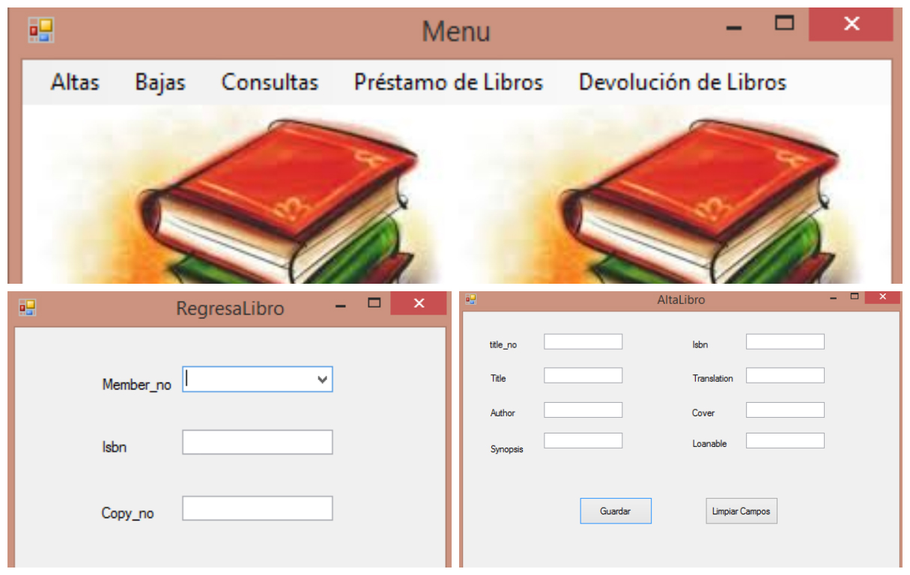
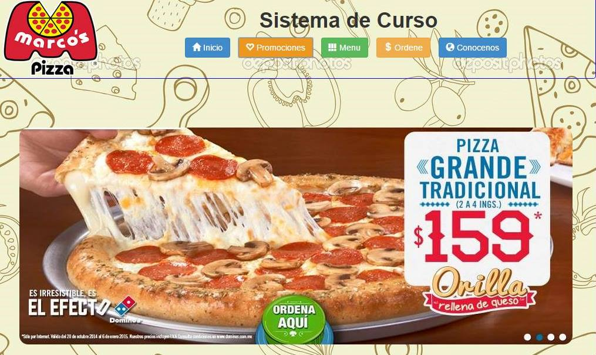

Este proyecto fue realizado en la
materia de Programación II. Fue un
trabajo que realizé en equipo con
mi compañera y amiga Mia Sainz.
Utilizando visual estudio, lenguaje
c# y sqlServer, el objetivo del
proyecto fue crear formularios
y enlazarlos conectarlos a la base
de datos.

Este es un proyecto que realizé en
la materia de Bases de Datos distribuidas.
El cual consistió en que en visual
estudio y lenguaje c#, teniamos que enlazar
dichos formularios en la base de datos en
sqlServer mediante procedimientos almacenados.
Proyecto realizado en la clase de Programación
Web. Lenguaje HTML 5, Hojas de estilos, JQuery
y PHP.
Altas, Bajas, Cambios y Consultas en la Base de
datos.

Proyecto realizado en la materia de Ingenieria
de software. Creación de una página web que
debia permitir el envio de datos a una base de datos.
Empleos
Mi primer empleo lo obtuve en julio del
año pasado. Trabajé en Cinemex Plaza Forum
y estaba en el area de dulceria. Mi trabajo
consistia en servir palomitas, hotdogs, nachos
refrescos, etc. Solamente trabajé un mes.
Mi segundo empleo: Estoy muy contenta porque
actualmente se me dio la oportunidad de trabajar
como maestra de francés en la Universidad Tecmilenio
Campus Culiacán.